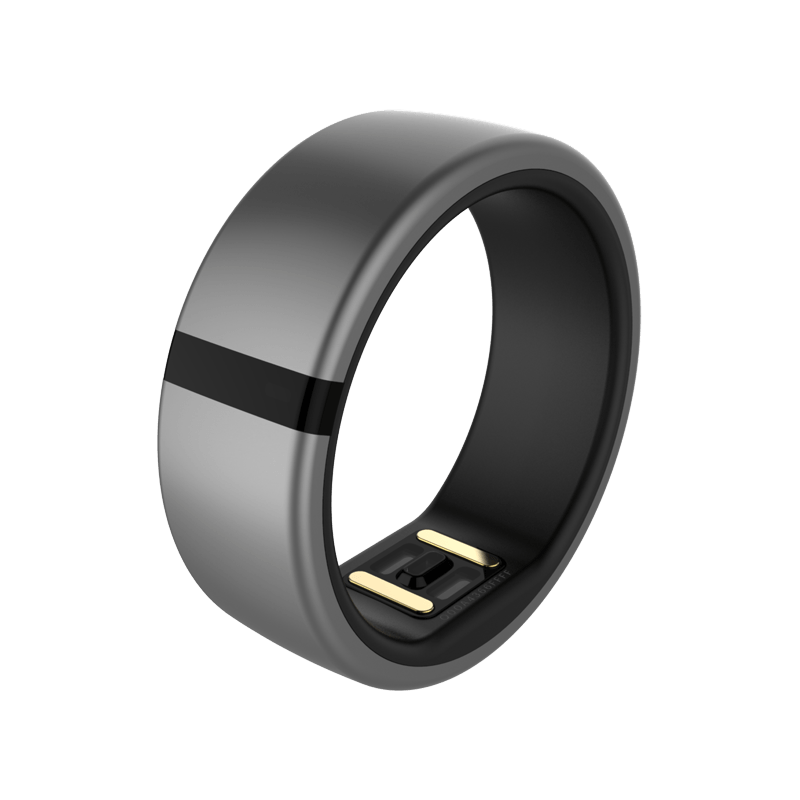
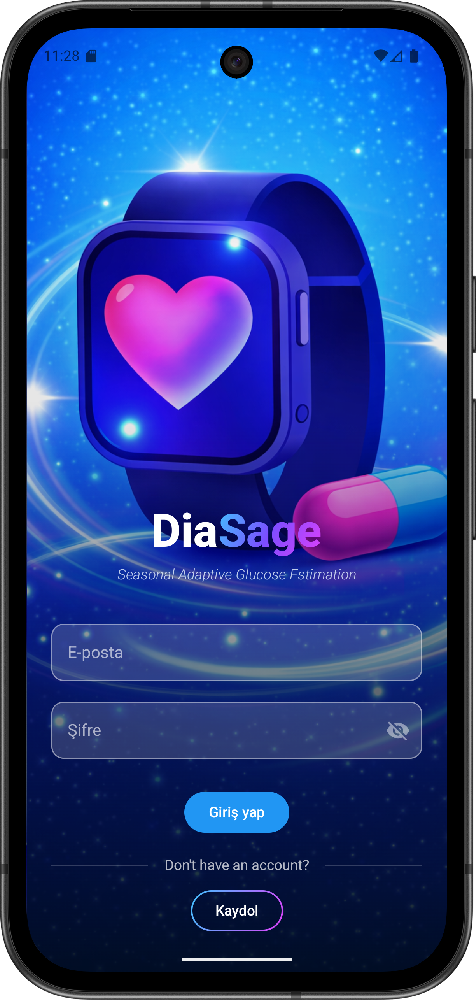
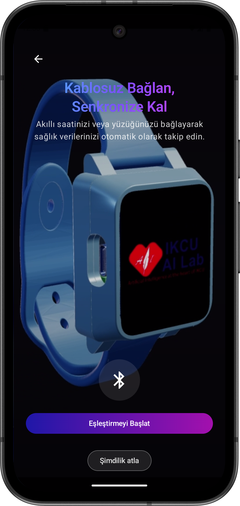
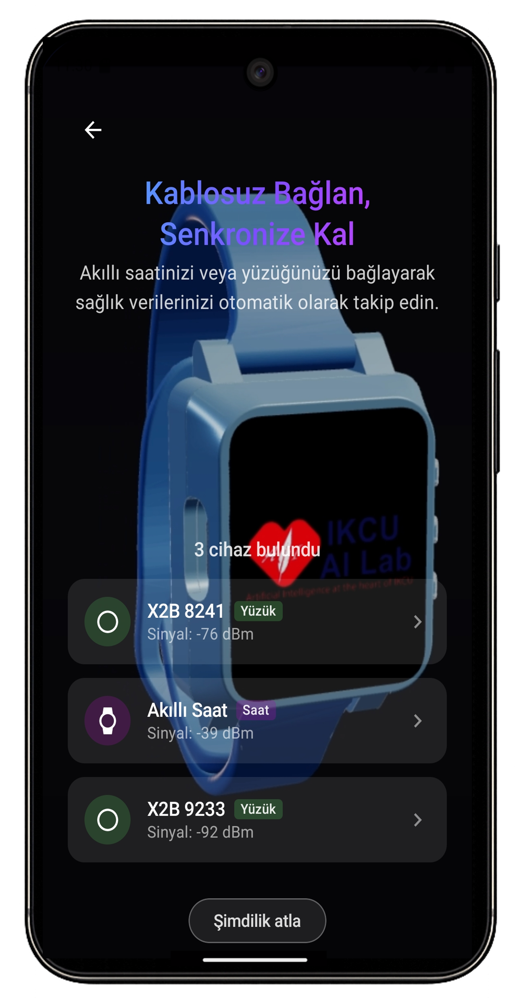
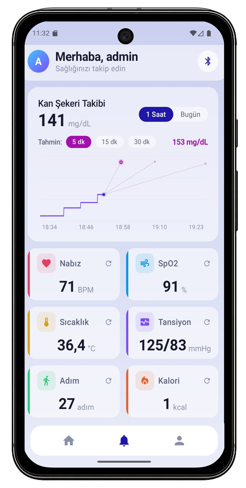
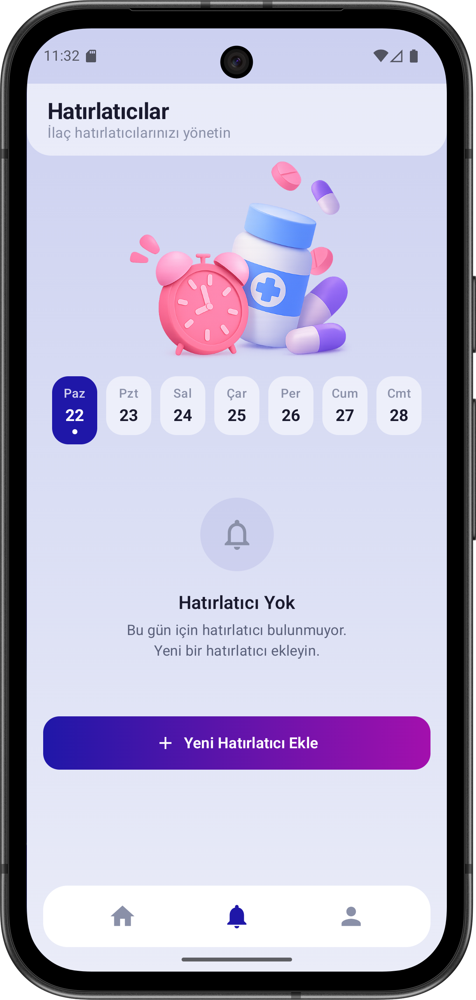
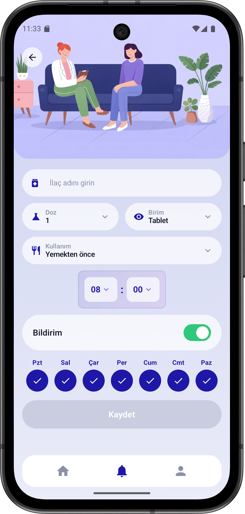
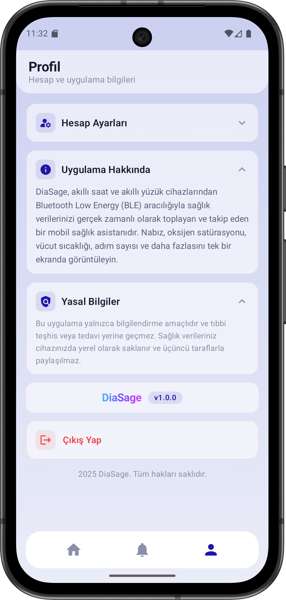

Destekçilerim

DiaSage ekosistemi; akıllı saat, akıllı yüzük ve mobil uygulama ile nabız, SpO2, sıcaklık ve daha fazlasını anlık olarak izler. Verilerinizi doktorunuzla güvenle paylaşın.
Akıllı saat ve akıllı yüzükten toplanan verilerin birleşimiyle toplamda 9 farklı sağlık parametresini sürekli olarak izleyin.
Özel olarak tasarlanan, 3D baskı kasaya sahip akıllı saat. ESP32-S3 işlemci, 1.69" dokunmatik LCD, MAX30100 nabız/SpO2 ve MLX90614 sıcaklık sensörleri ile donatılmış profesyonel sağlık takip cihazı.
DiaSage ekosisteminin ikinci giyilebilir cihazı. Parmağınızdan sürekli sağlık verisi toplayarak kesintisiz izleme sunar. BLE bağlantısı ile mobil uygulamaya otomatik senkronize olur.

Akıllı saat ve yüzükten toplanan tüm sağlık verileri tek bir uygulamada. İlaç hatırlatıcıları, sağlık raporları ve doktor paylaşımı.







Web tabanlı doktor paneli ile hastalarınızın nabız, SpO2, sıcaklık, tansiyon ve diğer sağlık verilerini gerçek zamanlı izleyin. Anormal değerlerde otomatik uyarı alın, trend analizi yapın.
Akıllı saat, akıllı yüzük, mobil uygulama ve doktor paneli; hepsi birbirine bağlı, hepsi sizin sağlığınız için.